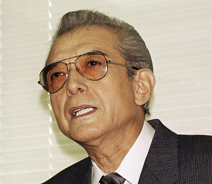

Nintendo
Företaget Nintendo grundades av Fusajiro Yamauchi den 23 september 1889 med namnet Nintendo Koppai. Han var då 29 år gammal. Företagets första produkt var handtillverkade spelkort kallade Hanafuda. Korten blev mycket populära och företaget fick anställa fler medarbetare för att kunna möta efterfrågan. Nintendo tillverkar spelkort än idag, och har organiserat en egen bridge-turnering som kallas Nintendo Cup. Namnet Nintendo består på japanska av tre skrifttecken: nin 任 för plikt och ansvar, ten 天 för himmel och do 堂 för tempel. Nintendos egen översättning är "Lägg lyckan i himlens händer". Fusajiro Yamauchi pensionerade sig år 1929, vid 70 års ålder och lämnade över företaget till Sekiryo Yamauchi år 1929 som då blev företagets president. Fusajiro Yamauchi dog i januari 1940. År 1933 började Nintendo samarbeta med ett annat företag och då ändrade Sekiryo Yamauchi företagets namn till Yamauchi Nintendo and Company. Sekiryo Yamauchi dog år 1949. Han hade då varit Nintendos president i 20 år. Hans barnbarn, Hiroshi Yamauchi tog över som president 1949. Han bytte namn på företaget igen till Nintendo Playing Card Company, Limited. År 1951 ändrade han Nintendos fördelningsföretag från Marufuku Company, Limited till Nintendo Karuta Company, Limited. Två år senare, år 1953 blev Nintendo det första japanska företaget att tillverka spelkort gjorda av plast. Det blev en stor succé och det gjorde att Nintendo dominerade kortmarknaden i Japan.

Grundare
Fusajiro Yamauchi, född 22 november 1859 i Kyoto, död 1 januari 1940, var en japansk företagare. Han grundade företaget Nintendo år 1889 vars syfte var att tillverka spelkort, så kallade hanafuda. Fusajiros dotter Tei Yamauchi gifte sig med Sekiryo Kaneda (bytte senare efternamn till Yamauchi) som blev Nintendos andra vd, från 1929 till 1949. Företagets tredje vd, mellan 1949 och 2002, var Fusajiros barnbarn Hiroshi Yamauchi.

Konsol Grundaren
Hiroshi Yamauchi, född 7 november 1927 i Kyoto, död 19 september 2013 i Kyoto, var en japansk företagsledare. Han efterträdde Sekiryo Yamauchi och blev därmed företaget Nintendos tredje VD år 1949. Yamauchi var företagets VD fram till och med år 2002. Hans efterträdare hette Satoru Iwata, som arbetade som Nintendos fjärde VD fram till att han avled 11 juli 2015. Yamauchi var känd för sin hårdföra ledarstil - exempelvis inledde han sitt ledarskap med att sparka flertalet släktingar för att på så sätt försäkra sig om att behålla makten över företaget
